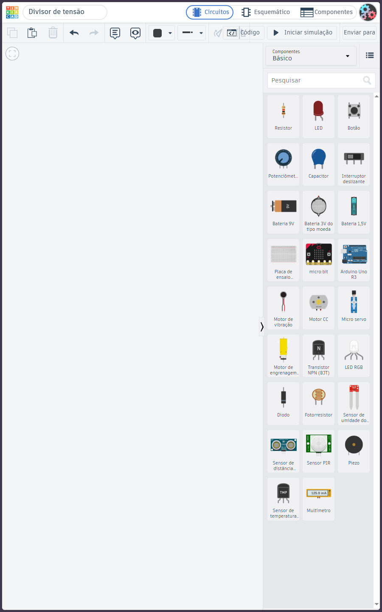
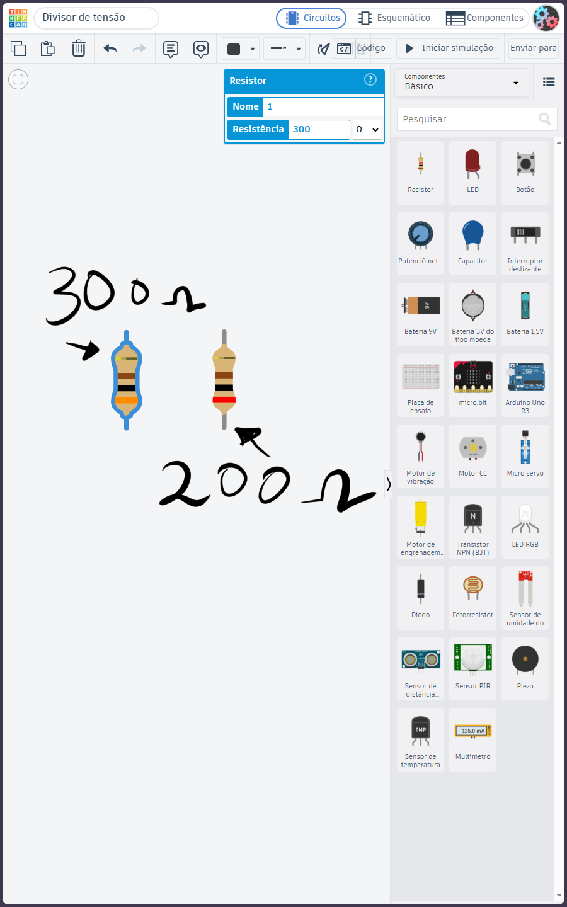
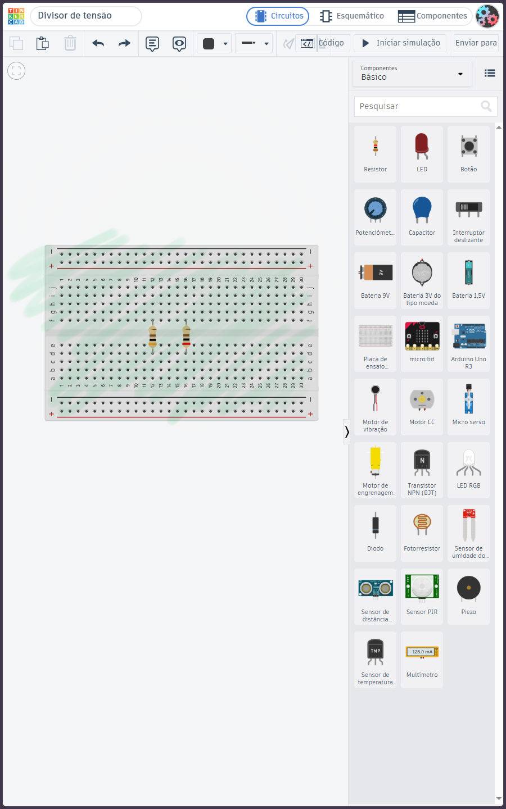
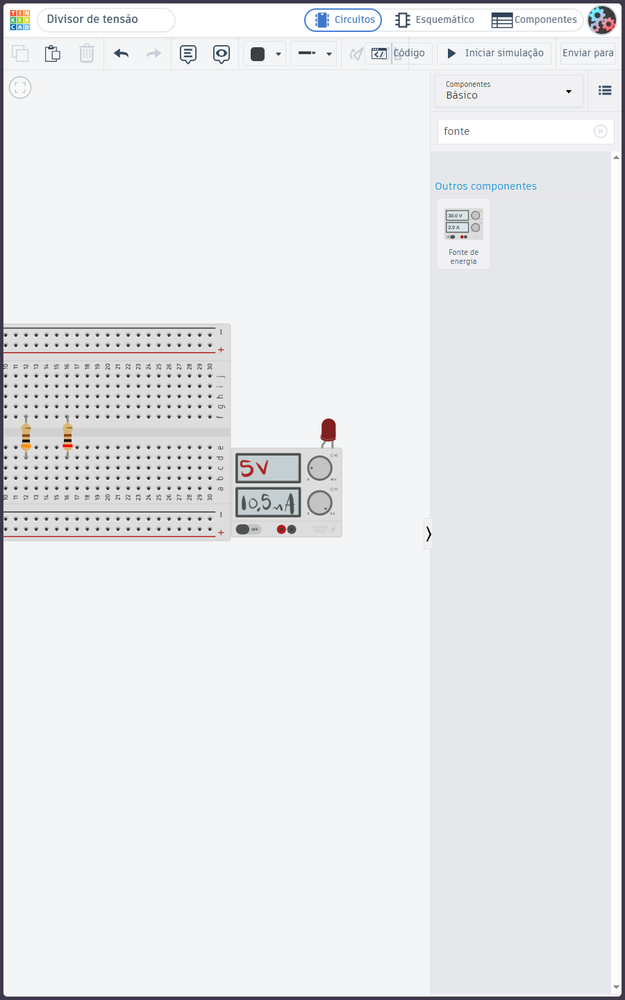
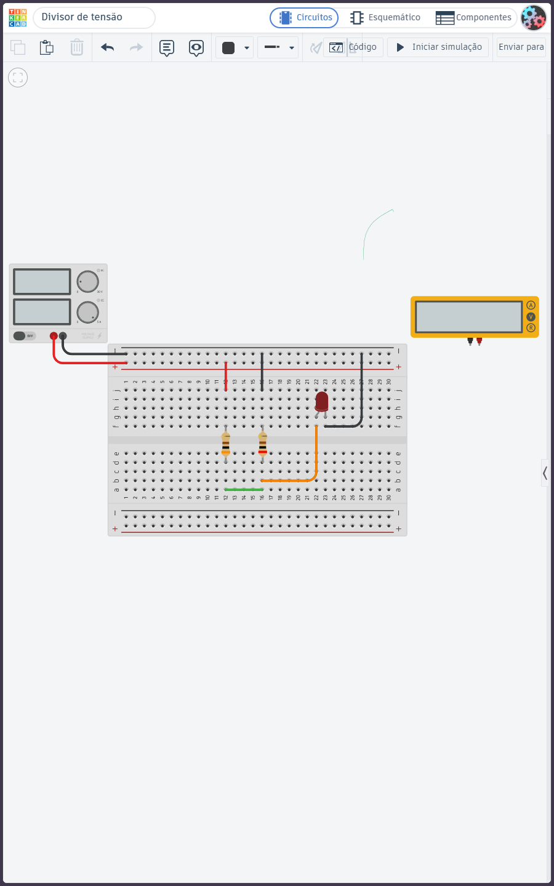
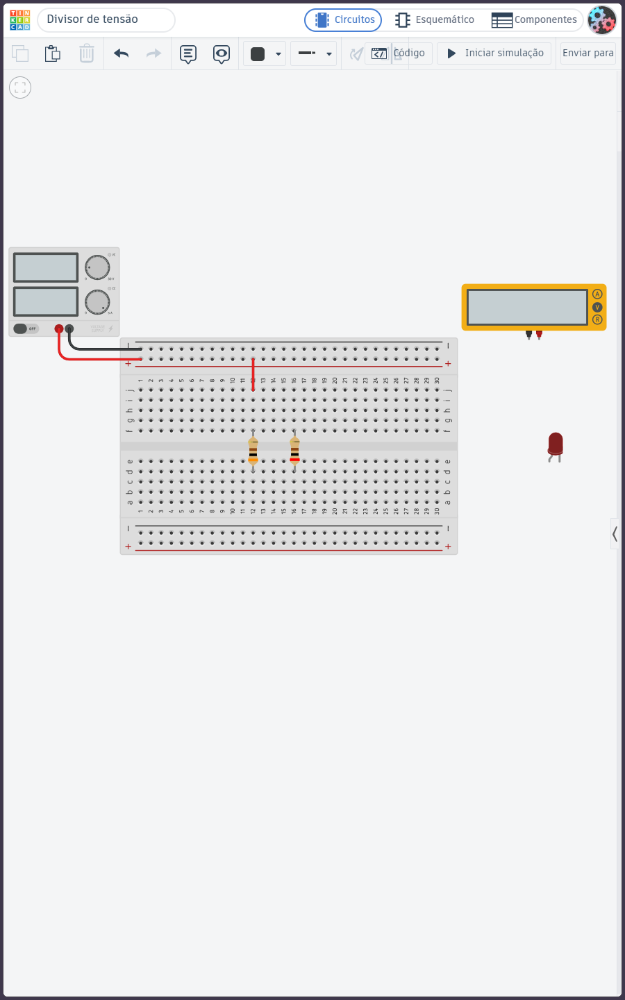
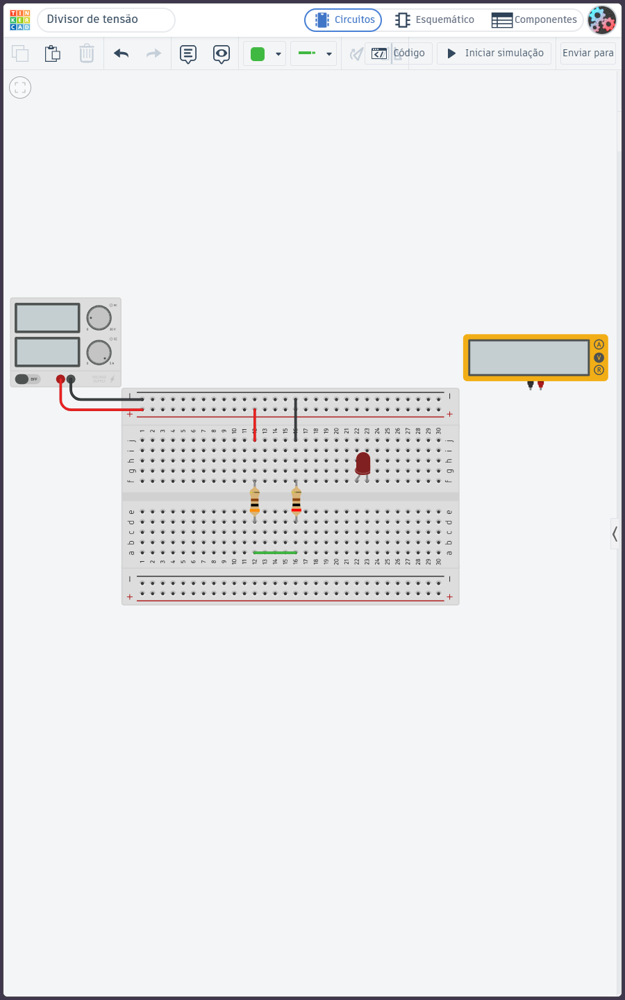
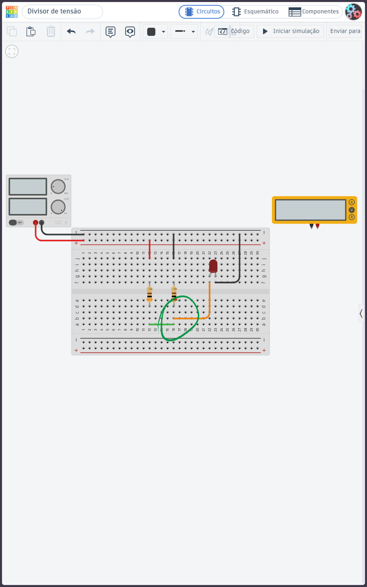
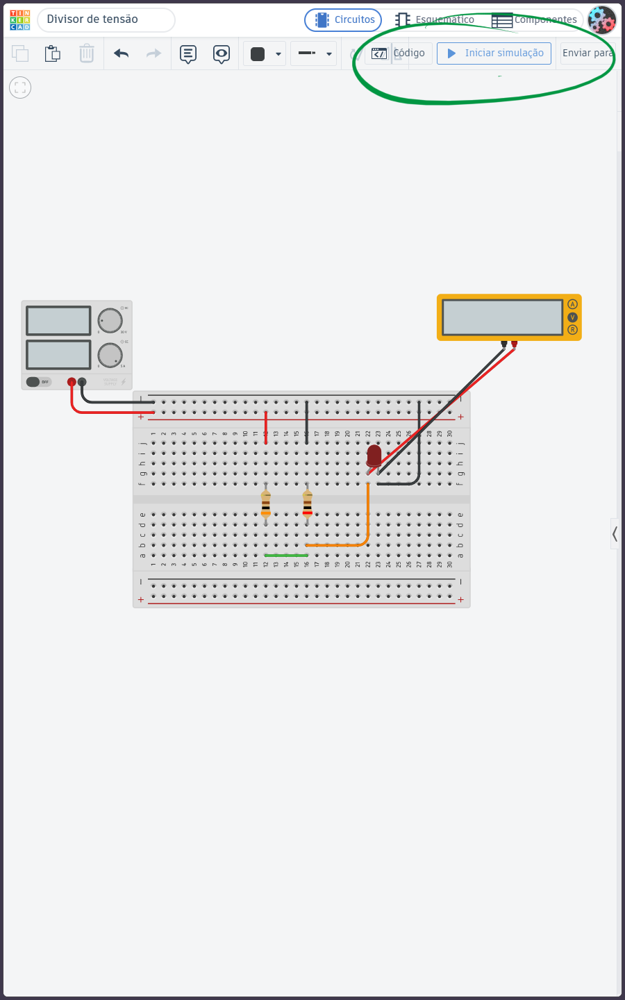
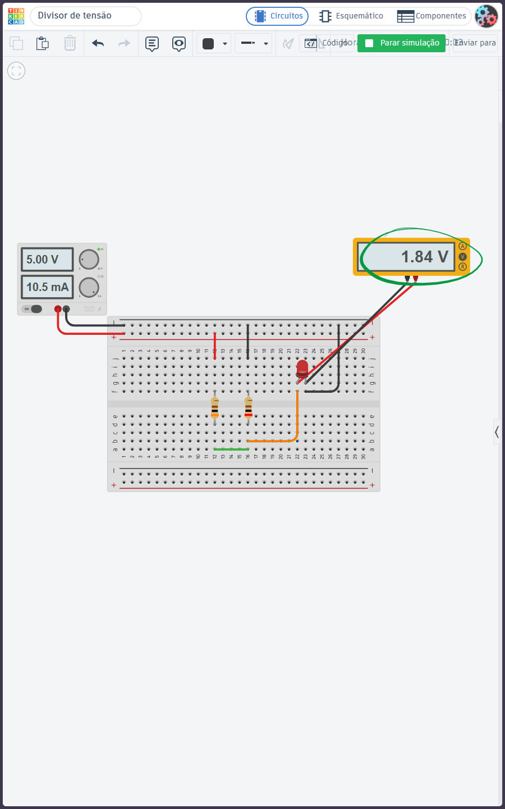

#1
Iniciamos o tutorial de divisor de tensão.

#2
Pegue um resistor de 300 Ohms e outro de 200 Ohms.

#3
Agora, pegue uma protoboard para posicionar os componentes.

#4
Posicione os componentes na protoboard conforme o esquema. Após isso, pegue uma fonte de 5V e um LED, pode ser de qualquer cor

#5
E por último pegue um multímetro e coloque na medida de tensão.

#6
Conecte o positivo no barramento vermelho da protoboard. e o negativo no barramento preto.

#7
A ligação a seguir: do barramento vermelho à entrada do resistor 1 (300R) em série com o resistor 2 (200R), e faz o retorno para o negativo.

#8
No ânodo do resistor 2 (300R), ligue em série com o ânodo do LED (pino maior), e do Cátodo do LED para o GND (barramento preto).

#9
Use o multímetro para medir a tensão, positivo do multímetro no positivo do LED (ânodo) e negativo do multímetro no negativo do LED (cátodo).Dá play no circuito

#10
Agora podemos ver que a tensão medida no LED é de 1.84V e 10.5mA, uma corrente e tensão saudável para o LED.
